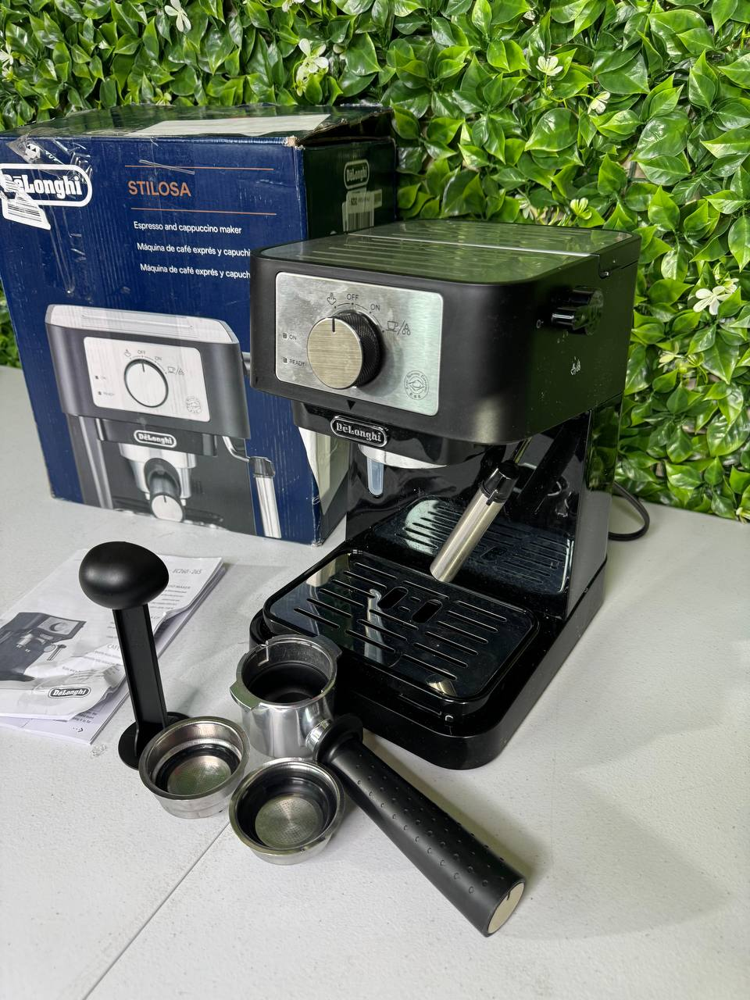

Coffee has become more than just a drink — it is part of daily routines for millions of people around the world. From busy professionals to Hollywood celebrities, many people rely on high-quality coffee machines to start their day.
While most people choose coffee machines based on convenience and price, celebrities often invest in premium appliances that deliver café-quality coffee at home. Interestingly, many well-known actors and public figures have been linked to specific coffee machine brands through interviews, lifestyle magazines, and brand partnerships.
Below we explore some of the coffee machine brands that have appeared in celebrity kitchens and media features.
One of the most famous celebrity coffee partnerships in the world is between actor George Clooney and Nespresso. Clooney has been the face of the brand for many years and helped make capsule coffee machines globally popular.
Nespresso machines became famous because they allow users to make espresso quickly using sealed capsules. This system makes brewing extremely simple while maintaining consistent flavor and pressure.
For many people who want fast espresso without complicated equipment, Nespresso became a popular choice.
Source: The Guardian – George Clooney and Nespresso
Italian brand De’Longhi is another well-known coffee machine manufacturer. The company gained additional attention when actor Brad Pitt appeared in a global advertising campaign promoting their espresso machines.
De’Longhi machines are popular among coffee lovers who want a balance between convenience and control. Many of their models include built-in grinders, milk frothers, and customizable brewing settings.
These features allow users to prepare drinks such as:
Many home coffee enthusiasts prefer De’Longhi because it offers café-style drinks without requiring professional barista equipment.
Source: Hollywood Reporter – Brad Pitt and De’Longhi
Breville is another brand frequently mentioned among coffee enthusiasts and home baristas. In various lifestyle discussions and appliance recommendations, Breville machines have been associated with celebrity kitchens and coffee lovers.
Breville machines are known for providing more manual control than capsule machines. Many models include integrated grinders and adjustable brewing settings.
This allows users to control:
Because of this flexibility, Breville machines are often recommended for people who want a more authentic espresso experience at home.
Source: Espresso Outlet – Celebrity Coffee Machines
KitchenAid is best known for stand mixers, but the company also produces high-quality coffee machines and kitchen appliances.
Lifestyle publications have featured Jennifer Garner’s kitchen setup, where KitchenAid appliances appear alongside other premium kitchen tools.
KitchenAid coffee machines are known for their durable construction and classic design. Many homeowners prefer the brand because it integrates well with other KitchenAid appliances.
Source: Homes & Gardens – Jennifer Garner KitchenAid Coffee Maker
Although celebrities often have access to expensive appliances, the brands mentioned above are also widely used by everyday coffee lovers.
There are several reasons why these coffee machines became so popular.
Premium machines maintain stable pressure and temperature during brewing, which helps produce balanced espresso with rich flavor.
Modern machines allow users to prepare café-style drinks without leaving the house.
Many machines allow users to customize strength, temperature, grind size, and milk foam levels.
Coffee machines are not the only appliances frequently mentioned in celebrity homes. Many lifestyle magazines and kitchen tours highlight other popular appliances used by public figures.
Some commonly featured brands include:
These appliances became popular because they combine performance, design, and convenience.
Sources:
High-quality coffee machines can sometimes cost hundreds of dollars in retail stores. However, many people do not realize that the same brands can sometimes be purchased at significantly lower prices through liquidation inventory.
Liquidation stores often receive:
Because of this, it is sometimes possible to buy premium appliances at a fraction of the retail price.
If you want to enjoy the same type of appliances used by coffee lovers and celebrities without paying full retail prices, you can browse available inventory here:
You can also explore more discounted appliances for your home:
From George Clooney’s Nespresso machines to Brad Pitt’s De’Longhi espresso setup, coffee machines have become a staple in celebrity kitchens and modern homes alike.
While premium coffee machines are often associated with luxury lifestyles, liquidation inventory and discount deals make it possible for everyday shoppers to enjoy the same quality appliances at much more affordable prices.
With the right coffee machine, anyone can bring café-quality coffee into their own kitchen.